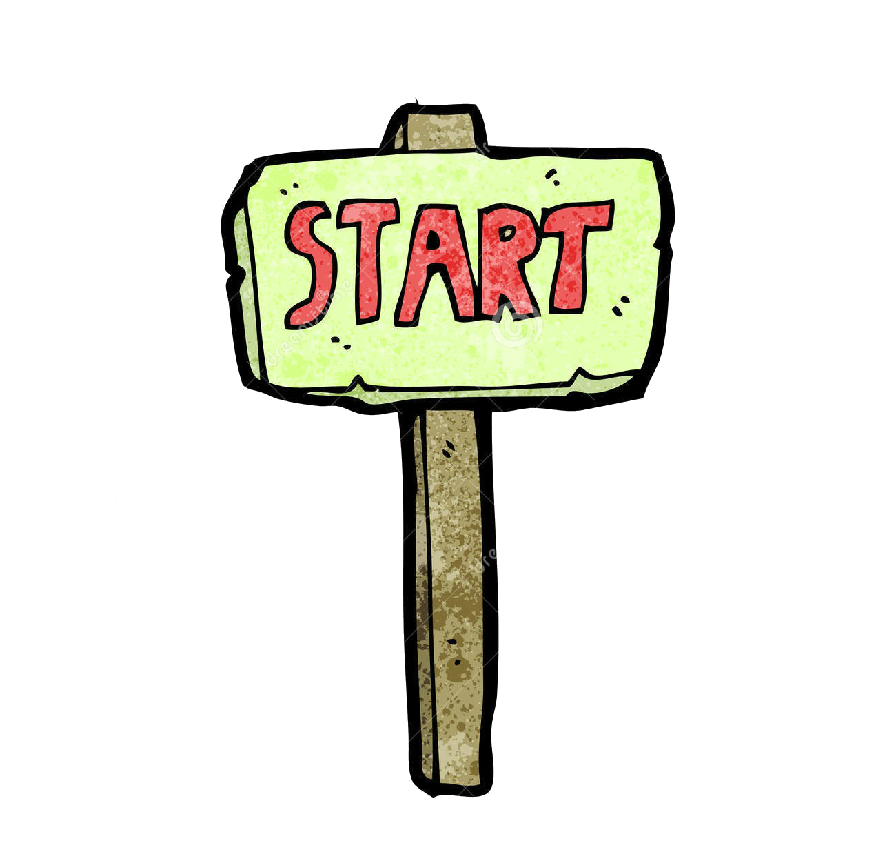
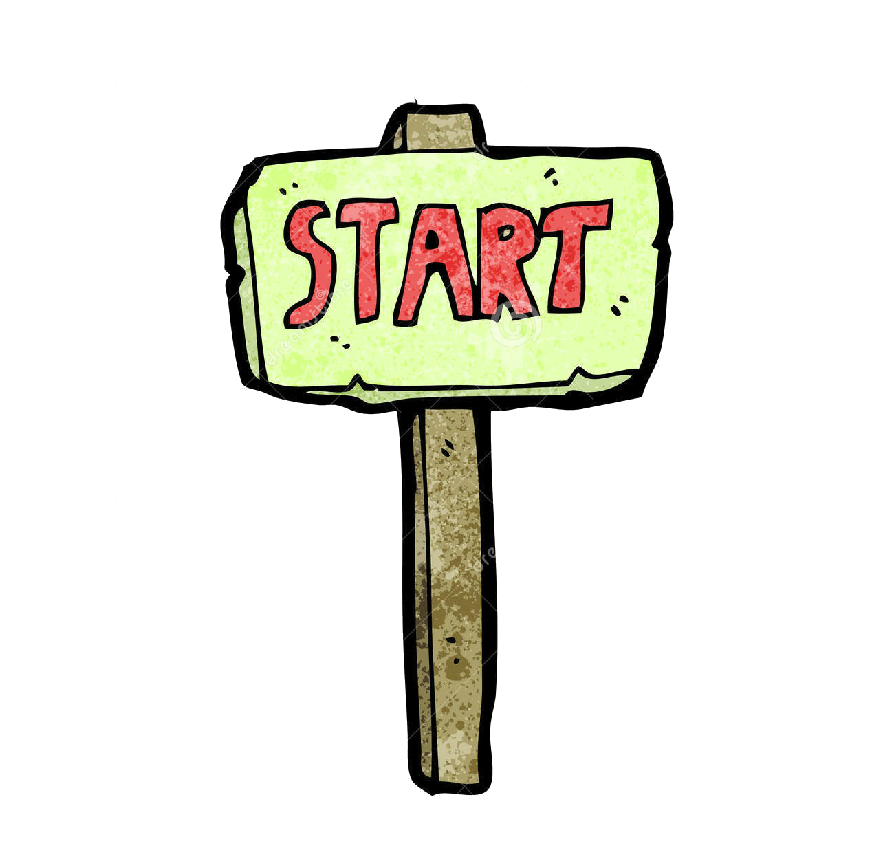

Material
1. 咖啡液部分
黑咖啡 200ml
咖啡酒 or 奶酒 隨意
2. 起司餡部分
a. 馬斯卡彭起司(Marscarpone) 500g
生蛋黃 3~5 顆
砂糖 100~150g
b. 生蛋白 2~3 顆
c. 鮮奶油 100~150ml
(b & c 可擇一或兩者皆用)
3. 其他
手指餅乾 一包
可可粉 適量
Step
1. 先泡咖啡，因為需要放涼
2. 打三顆蛋，將蛋黃蛋白分開
3. 將砂糖加入生蛋黃
4. 用攪拌器打至砂糖融化、整體成米黃色狀
5. 馬斯卡彭起司先放至室溫回溫，太冰會打不散
6. 將馬斯卡彭起司加入剛剛的蛋液中，攪拌均勻
7. 打發鮮奶油 or 蛋白至乾性發泡這個程度
8. 將鮮奶油 or 蛋白 or 兩者加入剛剛的起司餡中，
攪拌至光滑無顆粒
9. 等材料都備齊，組合起來就行了！
 
